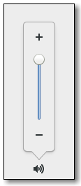

Gtk.VolumeButton
Example
Methods
| Inherited: | Gtk.ScaleButton (9), Gtk.Button (29), Gtk.Bin (1), Gtk.Container (27), Gtk.Widget (256), GObject.Object (33), Gtk.Buildable (10), Gtk.Actionable (5), Gtk.Activatable (6), Gtk.Orientable (2) |
|---|
| static | new() |
Virtual Methods
| Inherited: | Gtk.ScaleButton (1), Gtk.Button (6), Gtk.Container (10), Gtk.Widget (82), GObject.Object (7), Gtk.Buildable (10), Gtk.Actionable (4), Gtk.Activatable (2) |
|---|
Properties
| Inherited: | Gtk.ScaleButton (4), Gtk.Button (10), Gtk.Container (3), Gtk.Widget (38), Gtk.Actionable (2), Gtk.Activatable (2), Gtk.Orientable (1) |
|---|
| Name | Type | Flags | Short Description |
|---|---|---|---|
| use-symbolic | bool | r/w/c | Whether to use symbolic icons |
Style Properties
| Inherited: | Gtk.Button (7), Gtk.Widget (17) |
|---|
Signals
| Inherited: | Gtk.ScaleButton (3), Gtk.Button (6), Gtk.Container (4), Gtk.Widget (69), GObject.Object (1) |
|---|
Fields
| Inherited: | Gtk.ScaleButton (1), Gtk.Button (1), Gtk.Bin (1), Gtk.Container (1), Gtk.Widget (1), GObject.InitiallyUnowned (3), GObject.Object (3) |
|---|
| Name | Type | Access | Description |
|---|---|---|---|
| parent | Gtk.ScaleButton | r |
Class Details
- class Gtk.VolumeButton(label=None, stock=None, use_stock=False, use_underline=False, **kwds)
Bases: Gtk.ScaleButton
Gtk.VolumeButton is a subclass of Gtk.ScaleButton that has been tailored for use as a volume control widget with suitable icons, tooltips and accessible labels.
- static new()
Returns: a new Gtk.VolumeButton Return type: Gtk.Widget Creates a Gtk.VolumeButton, with a range between 0.0 and 1.0, with a stepping of 0.02. Volume values can be obtained and modified using the functions from Gtk.ScaleButton.
New in version 2.12.